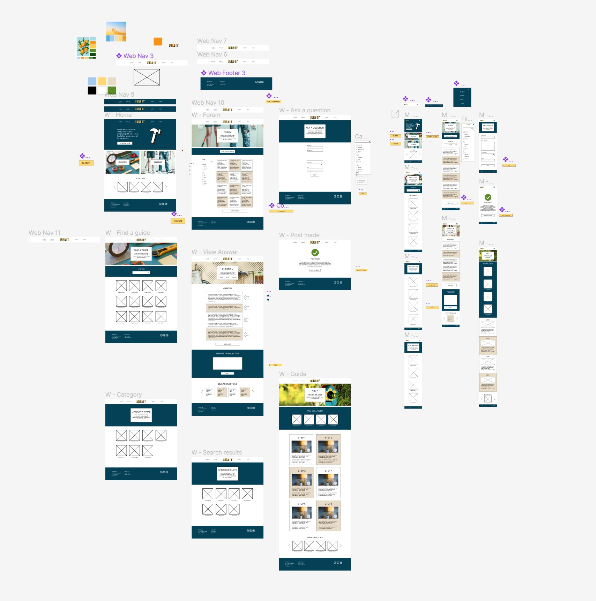

Typography
Today's lecture was about typography in web design. It discussed using approprate fonts regarding emotion and practicality, as well as hierarchy, weight and spacing. Choosing the right font is important, especially when the content of a website is wordy and/or important. It needs to be accessible to users by being large enough to read and simple enough to distinguish letters. The aesthetic of the font also has to match the vibe of the website. Choosing the right font for my website is going to be important so that it makes the information on the page easy to understand and doesn't draw focus away from the actual content. I think I will use a simple sans serif to keep it legible and modern.
Responsive Design
This weeks lecture video was about using CSS grids to make our websites responsive. Using media queries, we can set screen size break points so that the layout of the grid changes based on the size of the screen. You then just need to rewrite the code that needs to change within the query, with everything else being inherited from the original layout.
I used media queries in high school to do responsive design, however I remember being very confused at how it actually worked. After watching this I am a lot clearer on how to go about using the queries and how it is basically just about overriding code. Responsive design is hugely important when making a website as nowadays a lot of people view websites on their phone or tablet. This means they need to have good usability and aesthetic across multiple devices and not just be the desktop version squished to fit a smaller screen as that makes it difficult to press buttons and read text. By using a mobile-first approach, as the video suggests, means that you can easily cater to all devices. This is a methodology I will try to follow when I get ot developing my website, as I intend to code it from scratch.
Assignment Progress
Today we did in-class presentations and got feedback on our work. Overall, the tutors were happy with my progress so far, however they had a few comments. The main comment was around the scaling of elements. Everything was too big - something that was more obvious on screen than on paper. They also said that I should play around with a few different layouts, potentially making my images grids have less columns and having the images bigger. Another suggestion was that I could add some transparency to the images so that the text on top of them didn't have to have a box around it. They pointed out the inconsistencies in the headers, as each had a slightly different layout. Finally, they suggested some places where I could aad some affordances to help the user navigate the site.
After receiving this feedback, I began to make some changes to my site. I started by shrinking a lot of the elements to make them look more proportionate to the screen size. I then readjusted the layouts of a few pages, particularly the forum and answer pages. I moved the filters to the left side of the filter page and put the question grid next to it. I alternated the colours of each of the boxes to distinuish them from each other and I changed the size and colour of the 'Ask a Question' button. I feel like this layout looks a lot better than the previous version. On the answers page, I changed it so that there was one column of answers in the centre of the page and moved the 'Answer this Question' box to the bottom with a new carousel of suggested questions. I moved the text box as someone using the site is more likely to want to see the answers rather than answer the question themselves, and I added a carousel as something I identified in my customer journey map was that people would want suggestions for alternative questions to help them find the help they are looking for.
Across the whole design, I made the headers more consistent as well as the text alignments. I also changed my colour palette to use a dark blue rather than a light blue. This creates more contrast dominance and makes the website look a lot more professional. I think it looks much better now and suits the site more.
After making these changes, I got some more feedback from my tutors. Overall, they liked the changes I had made but had a few more suggestions:
- More consistency with my buttons and their sizes, as well as making their hover states more obvious
- Utilise the Material Design icons to make them look more professional
- Get rid of some of the tan colour as it doesn't quie work
- Move the filters to the top of the filter page so the rest of the content can be centred
- Change the active state on the navigation to use colour rather than underline
- Add more detail to the question cards, like categories tags
- Keep playing around with the size of the grids
- Fix little things like strokes and font sizes.
My next steps are to implement these changes so that I can finish the design and start on the write up.